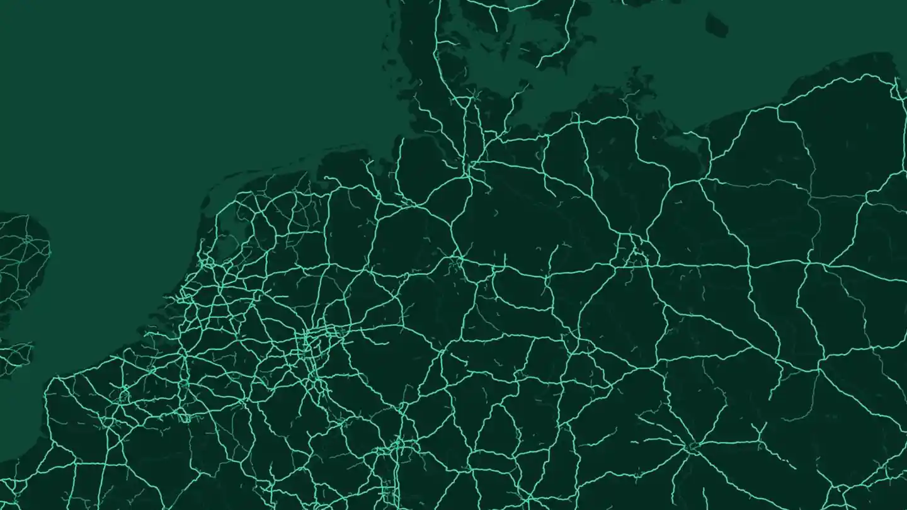
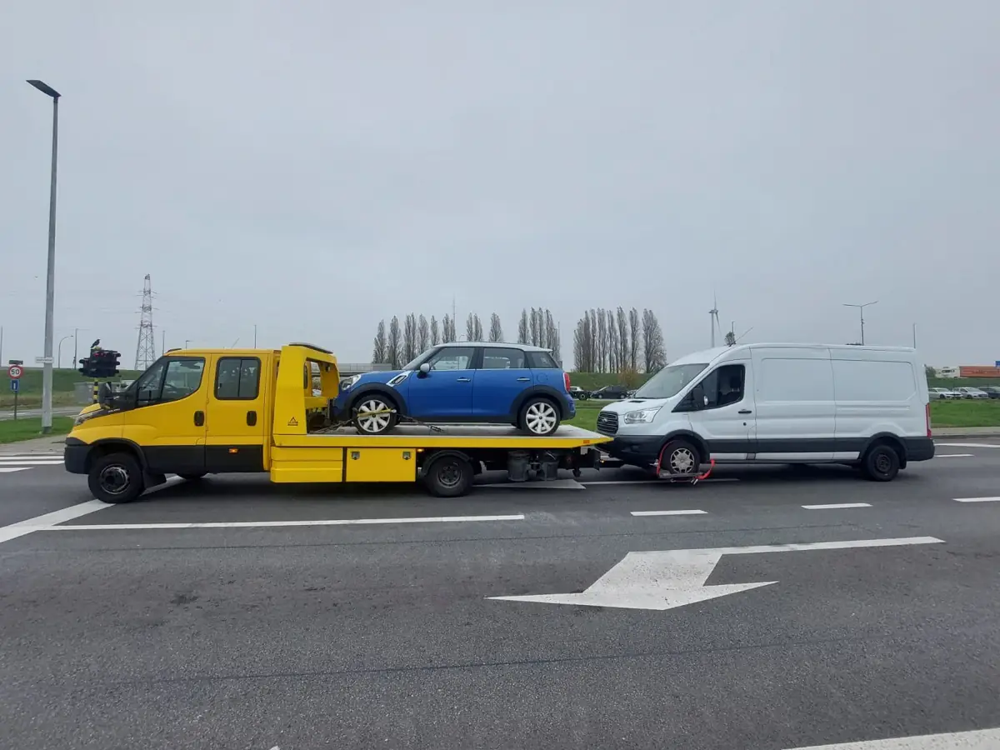

Pannenhilfe
Batterie leer, platter Reifen, falsch getankt, Startprobleme oder ausgesperrt? Wir versuchen zuerst, Ihnen vor Ort zu helfen.
Mehr erfahren →
Abschleppdienst Köln
Panne, Unfall oder ein Fahrzeug, das nicht mehr startet? Schreiben Sie uns jetzt per WhatsApp. Wir besprechen die Situation sofort und organisieren die Hilfe in Köln und Umgebung.

Von der einfachen Starthilfe bis zum Abschleppen nach einem Unfall.
Batterie leer, platter Reifen, falsch getankt, Startprobleme oder ausgesperrt? Wir versuchen zuerst, Ihnen vor Ort zu helfen.
Mehr erfahren →Nach Unfall, Brand oder Schaden holen wir Ihr Fahrzeug sicher ab und bringen es zum vereinbarten Ort.
Mehr erfahren →A1, A3, A4, A555 und A57 rund um Köln: Was Sie bei einer Panne im dichten Verkehr tun.
Mehr erfahren →Neun Stadtbezirke, mehrere Ringe und Rheinbrücken: Wie Sie uns Ihren Standort in Köln am besten beschreiben.
Mehr erfahren →Nicht starten, Zündung aus: Wir bringen das Fahrzeug dorthin, wo der Tank abgepumpt wird.
Mehr erfahren →Schlüssel im Auto? Es gibt Wege, die Tür ohne Schaden zu öffnen. Wir sagen Ihnen, welche.
Mehr erfahren →Sie werden auf der Ladefläche transportiert, damit Motor und Elektronik keinen Schaden nehmen.
Mehr erfahren →Krafträder dürfen nicht abgeschleppt werden. Sie werden auf einem geeigneten Fahrzeug transportiert.
Mehr erfahren →Größere Fahrzeuge brauchen andere Kapazität und eine andere Ladeweise. Auch dafür gibt es eine Lösung.
Nennen Sie Ihren Standort (am schnellsten per WhatsApp-Standort), Marke und Modell und was passiert ist.
Wir besprechen mit Ihnen, was nötig ist und wie es weitergeht.
Wir organisieren die vereinbarte Hilfe und bringen Ihr Fahrzeug an den gewünschten Ort.
Eine WhatsApp-Nachricht reicht, Sie müssen nicht mehrere Werkstätten abtelefonieren. Wir stellen Ihnen ein paar Fragen, die den Unterschied machen: Wo genau stehen Sie? Läuft der Motor noch? Ist das Fahrzeug beschädigt oder blockiert es die Fahrbahn? Ist es ein Benziner, Diesel, Hybrid oder Elektroauto? Damit entscheiden wir, ob Starthilfe reicht oder ob das Fahrzeug verladen werden muss, und welches Fahrzeug dafür gebraucht wird.
Ein Elektroauto darf nicht wie ein Benziner an einem Seil gezogen werden, ein Motorrad darf nach der Straßenverkehrs-Ordnung überhaupt nicht abgeschleppt werden, und ein Transporter mit hoher Ladung passt nicht in jede Tiefgarage. Deshalb fragen wir zuerst nach dem Fahrzeug. Mehr dazu in unseren Ratgebern zum Abschleppen von E-Autos und zum Motorrad-Transport.
Bringen Sie sich zuerst in Sicherheit, bevor Sie uns schreiben: Warnblinkanlage einschalten, Warnweste anziehen, Warndreieck aufstellen, wenn es sicher möglich ist, und wenn möglich hinter der Leitplanke warten. Bei Verletzten wählen Sie zuerst die 112. Um das Technische kümmern wir uns.
Wenn Sie wissen, wo Sie stehen, finden Sie schneller passende Hinweise: Innenstadt, Ehrenfeld, Nippes, Lindenthal, Rodenkirchen, Deutz, Porz, Kalk, Mülheim und Chorweiler. Rund um Köln: Bergisch Gladbach, Frechen, Hürth, Pulheim, Kerpen, Brühl, Wesseling, Troisdorf, Langenfeld und Monheim. Für die Autobahnen gibt es eigene Seiten, siehe Kölner Autobahnring. Weitere Themen: Panne im Tunnel: was tun?, Umweltzone Köln und Kosten in Köln.
Faster hat seinen Sitz in Antwerpen (Belgien). In Köln und Umgebung arbeiten wir mit Partnern zusammen, die den Einsatz vor Ort übernehmen. Sie erreichen uns rund um die Uhr, wir koordinieren die Hilfe. Das sagen wir Ihnen ehrlich, bevor Sie sich entscheiden.
Köln hat neun Stadtbezirke, links und rechts des Rheins, und wir sind in allen im Einsatz. Zu jedem Bezirk gibt es eine eigene Seite mit den wichtigsten Straßen, Brücken und Autobahnanschlüssen. Dort steht auch, wie Sie Ihren Standort so beschreiben, dass der Abschleppwagen nicht am falschen Ende der Stadt ankommt.
Alle Bezirke, Ringe und Rheinbrücken im Überblick: Köln: Stadtbezirke und Rheinbrücken.
A1, A3 und A4 bilden den Kölner Autobahnring, dazu kommen A57, A59 und A555. Wer hier liegen bleibt, steht oft mitten im dichten Verkehr. Sichern Sie sich zuerst ab und gehen Sie hinter die Leitplanke. Danach schreiben Sie uns per WhatsApp und nennen Autobahn, Fahrtrichtung und die letzte Ausfahrt. Zu jeder Strecke gibt es eine eigene Seite mit Ausfahrten, Kreuzen und Parkplätzen:
Per WhatsApp fragen wir zuerst nach dem Fahrzeug. Davon hängt ab, welcher Abschleppwagen kommt und ob Ihr Auto gezogen oder verladen wird.
Was ein Einsatz kostet, lässt sich nicht pauschal sagen. Entscheidend sind Standort und Ziel, das Fahrzeug (Pkw, Transporter, Motorrad, Elektroauto), die Uhrzeit, und ob das Fahrzeug noch rollt oder geborgen werden muss. Wir besprechen Ihren Fall persönlich. Wie Preise für Abschleppdienste allgemein zustande kommen, erklärt der Ratgeber zu den Kosten.
Schreiben Sie uns per WhatsApp und schicken Sie Ihren Standort.